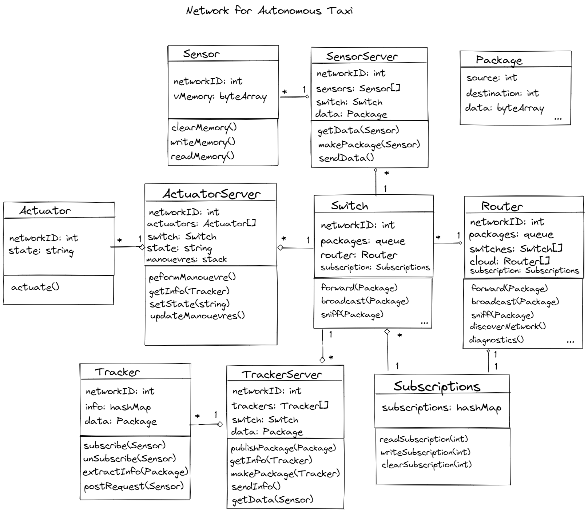
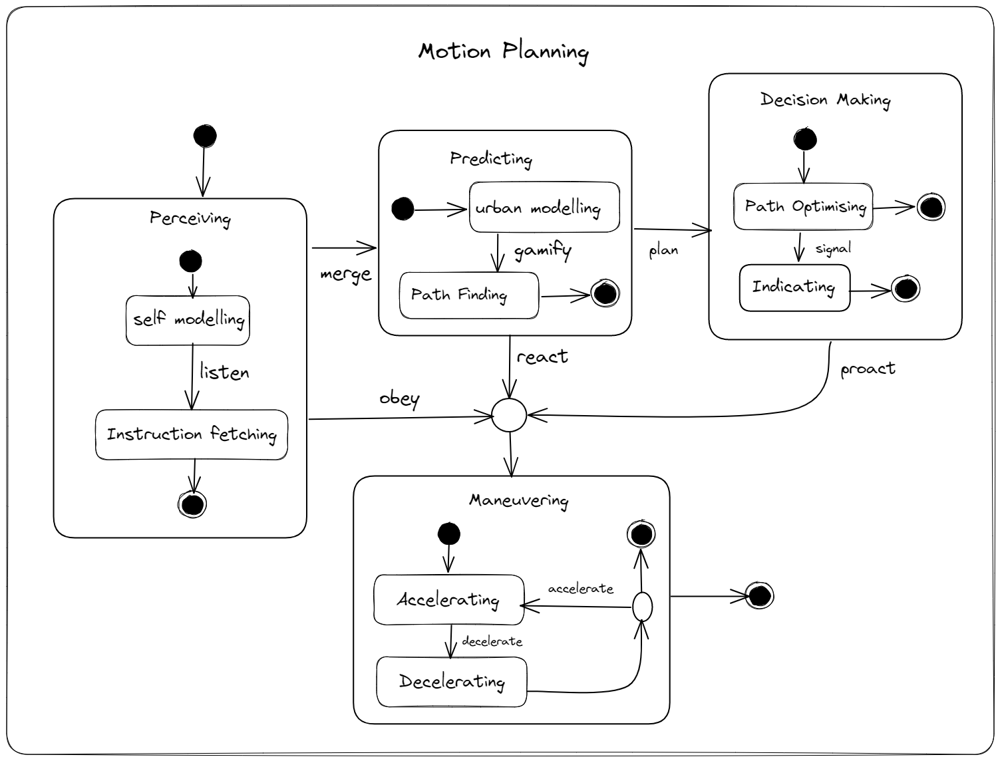
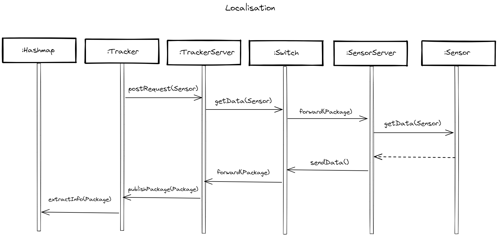
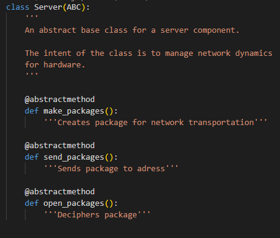
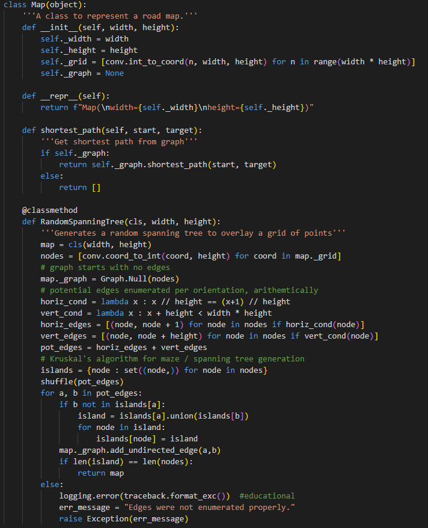
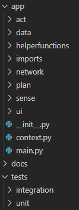
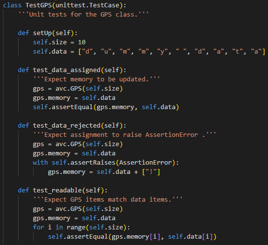
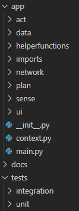
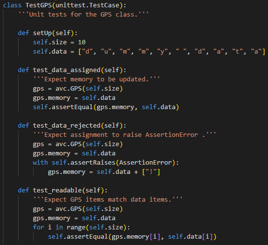

Autonomous Vehicles
The topic of autonomous vehicles was a reoccuring theme throughout this module, and we were asked to design and implement a system that would provide three core functionalities to an autonomous vehicle. My submissions can be found: here
Design
The design consisted of five UML diagrams, three of which are included below that outline the three core functionalities of the system:
  Implementation
The implementation was in Python. Some of main features I'd like to mention are: the use of abstract base classes, the use of reasonable datastructures and algorithms, the simple main-script template, the organised file structure and the use of a testing framework. Examples of this are showcased below:
  



References
The collection of papers I used to design the system.
- Garzon, M. & Spalanzani, A. (2019) 'Game theoretic decision making for autonomous vehicles' merge manoeuvre in high traffic scenarios'. 2019 IEEE Intelligent Transportation Systems Conference (ITSC). Auckland, New Zealand, 2019. New York: IEEE. 3449-3453. DOI. - Garzon and Spalanzani present a game theoretic process for an autonomous car to peform merge manoeuvres in high traffic scenarios.
- Reddy, P. (2019) Driverless Car: Software Modelling and Design using Python and Tensorflow. - Reddy presents an architecture for an autonomous vehicle using the Robot Operating System (ROS). Reddy also presents implementations of an object detection system using Tensorflow.
- Shahzad, K. (2016) 'Cloud Robotics and Autonomous Vehicles', in: Zak, A. (eds) Autonomous Vehicles. London, UK: IntechOpen. 13-31. DOI. - Shazad presents a chapter about the history and applications of cloud robotics.
- Srivastava, A. (2019) Sense-Plan-Act in Robotic Applications. DOI. - Srivastava examines different sense-plan-act architectures in robotics and discusses their application.
- Zanella, A., Bui, N., Castellani, A., Vangelista, L. & Zorzi, M. (2014) Internet of Things for Smart Cities. IEEE Internet of Things Journal 1(1): 22-32. DOI. - Zanella et al. analyse the solutions which are available for the implementation of urban IoTs.
- Zong, W., Zhang, C., Wang, Z, Zhu, J. & Chen, Q. (2018) Architecture Design and Implementation of an Autonomous Vehicle. IEEE Access 6: 21956-21970. DOI. - Zong et al. propose a hardware and software architecture for autonomous vehicles. They analyse sensor subsystems, discuss algorithms for planning, and outline a network subsystem for data transmission. They test their architecture on an autonomous driving test.
End of Module Reflection
At the start of this module, I knew nothing about the software of autonomous cars. It's not the easiest domain to jump into and begin designing for, hence companies are spending much more time building autonomous vehicles, so it's definitely a daunting task. But I was able to identify foundational models in domain to build upon, and start designing a system from those. Those key models included the sense-plan-act architecture of robotics, and the network data transmission model. Then I was able to consider how the internal components would interact, and how the car would interact with the technological environment.
The design phase was challenging because I had to chose three different core functionalities to implement. I was proud of my UML diagrams as I took the time build details with reference to actual research, in a short timeframe. My feedback was good, so I believe I successfully communicated my ideas.
The implementation phase was much more interesting for me. I spent a large amount of time building the software from scratch including datastructures, abstract base classes, test cases, network components, network protocols, information models and a tolerable text-based front end. I was able to implement the core functionalities that I had planned to. So I'm proud of what I did. The only thing I could have realistically improved with the resources that I had, was the documentation and comments, which I noticed contained some spelling mistakes afterwards.
There were many ways this project can be improved, such as by utilising asychronous functions. Most of the programme was encapsulated in objects, but some parts wasn't such as the helper functions. I could have placed those helper functions in a mixin object, for the sake of OOP, but I think that encapsulating them in a module was good enough, for any practical purpose. Other things that could have been improved included the range of components available to the car, the capabilities of the car, the documentation, I could have used powerful external libraries and SaaS services, built a GUI, or VUI. I think the next thing to do from this project, is to try and build a microgame with a better GUI, and explore a library such as tensorflow or pytorch, to build a neural network for the car to use.